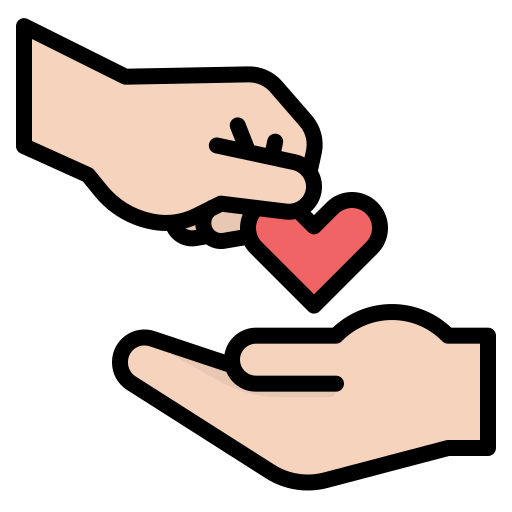

 Doar faz bem
Início
Meu Perfil
Sair
Cadastrar Solicitação
×
Campos marcados com * são obrigatórios
Tipo de doação * :
Cesta
Remédio
Roupa
Disponibilidade para Solicitação
×
Doação
Tipo
Data
Status
Ações
Não existem solicitações cadastradas para seu usuário
{{solicitacao.doacaoId}}
{{solicitacao.tipo_doacao}}
{{solicitacao.data | date:'dd/MM/yyyy'}}
{{solicitacao.status}}
Verificar disponibilidade
Home Receptor
Cadastrar Solicitação
Solicitação
Tipo
Data
Status
Ações
Não existem solicitações cadastradas para seu usuário
{{solicitacao.doacaoId}}
{{solicitacao.tipo_doacao}}
{{solicitacao.data | date:'dd/MM/yyyy'}}
{{solicitacao.status}}
Verificar disponibilidade